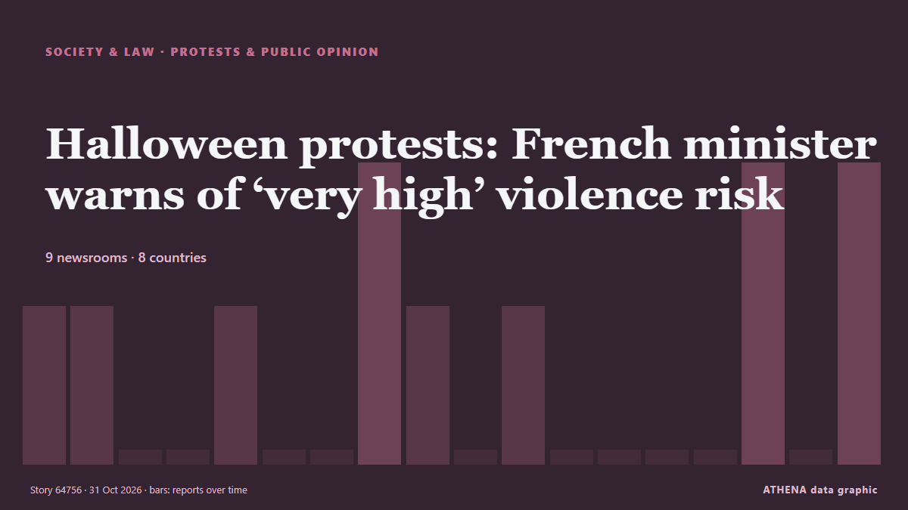

Manifestations et opinion
| 18 oct. | 0 |
|---|---|
| 19 oct. | 1 |
| 20 oct. | 0 |
| 21 oct. | 1 |
| 22 oct. | 1 |
| 23 oct. | 3 |
| 24 oct. | 1 |
| 25 oct. | 1 |
| 26 oct. | 6 |
| 27 oct. | 3 |
| 28 oct. | 3 |
| 29 oct. | 0 |
| 30 oct. | 3 |
| 31 oct. | 0 |
Les titres sont affichés en anglais, tels que publiés.

Halloween protests: French minister warns of ‘very high’ violence risk
France will deploy some 70,000 police officers in Paris and other cities ahead of a new round of nationwide protests on Saturday, with Interior Minister Laurent Nuñez warning of a "very high risk of… de France 24 English
France's Yellow Vest movement calls new protests for October 31st
France's Yellow Vest movement, which has helped organise protests rocking the country, called Saturday for new demonstrations on October 31. de The Local France
Protesters storm Serbian pro-Vucic TV station after his loss at polls
President Vucic called the incident an attack on free speech and the freedom of journalism. de Al Jazeera English
French Senate Passes Bill to Make Protesters Pay for Unrest Damage
However critics warned the move could curb the right to protest. de The Straits Times
Anti-mega dam protest rocks Arunachal capital
The protestors in Itanagar want the Siang Upper Multipurpose Project plan scrapped and arrested activists released. de The Hindu
Serbia’s ‘students’ celebrate for a second night after election victory
Thousands gathered on the streets of Belgrade for a second night to celebrate the student-led movement's victory. de Al Jazeera English
Albania opposition disrupts parliament session after violent street protests
TIRANA, Oct 29 - Opposition lawmakers in Albania disrupted a parliament session by letting off flares on Thursday following weeks of violent anti-government protests called by students demanding the… de The Straits Times
Employers must prioritise locals before hiring foreign workers, says Ramanan
Employers must use MyFutureJobs portal to seek local candidates first. de Malaysiakini
The Long March, told through what remains
A village's story of change: From the Long March to today. de CGTN (China)
Hundreds protest in Tel Aviv, Jerusalem and Haifa, call for Jewish-Arab government
Demonstrators gathered to demand Jewish-Arab cooperation as the opposition has won 67 seats, including 19 held by Arab parties, leaving Eisenkot's bloc short of a majority without Arab support. de Haaretz (English)
Police made 1,314 arrests in France's protests: government
Over 1,300 arrests were made across France during protests against high living costs, with reports of violence and injuries among police officers. de Arab News
Italian PM slams 'shameful' release of alleged protest organiser
Italian Prime Minister Giorgia Meloni on Wednesday slammed as "shameful" the decision by a judge to dismiss accusations against a campaigner arrested on terrorism charges for allegedly seeking to… de The Local Italy
Portugal housing protests continue after police clear camps
Demonstrators vow to continue their campaign to call for affordable housing in Portugal after police cleared tent camps and arrested at least 55 people. de DW English
Istanbul Bar Association elects new president
Lawyers at the Istanbul Bar Association, one of the world’s largest bar associations, cast their ballots on Oct. de Hürriyet Daily News
Israeli forces kill man with disability in southern Syria, authorities say
Israeli forces deploy snipers on rooftops, raid houses in Jamlah village in western Daraa. de Anadolu Agency (English)
More than 400,000 protest across France, challenging Macron as Paris clashes erupt
Clashes erupted in Paris as a mass march drew to a close Saturday, with more than 400,000 people rallying across France over school funding and soaring living costs in a fresh challenge to President… de PBS NewsHour
Palestinian activist Mahmoud Khalil returns to Columbia after US detention
Pro-Palestinian activist Mahmoud Khalil returned to Columbia University for the first time since his US detention. de Al Jazeera English
Portugal: Lisbon housing crisis sparks protest outside parliament
Demonstrators gathered outside Portugal's parliament to protest against the housing crisis and police violence during recent camp clearances. de Euronews English
French far-right leader Le Pen seeks to leverage unrest in presidential campaign kick-off
Marine Le Pen, leader of France’s far-right National Rally, is set to address some 10,000 supporters on Sunday in the city of Orleans as she kicks off her presidential campaign, a day after… de France 24 English